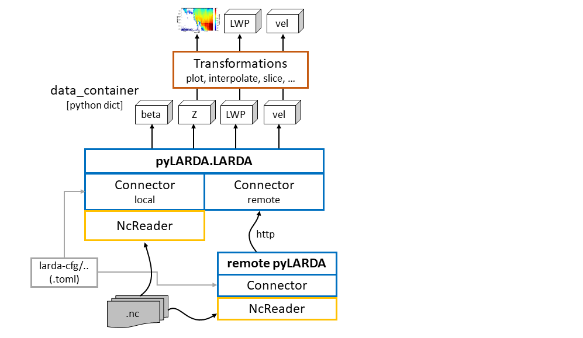

pyLARDA v3¶
pyLARDA for accessing and analysing ground based remote sensing data. It tries to simplify following tasks:
finding netcdf files in a complex folder structure
loading data from differently formatted netcdfs
stitching data from consecutive files together
simplify common plotting tasks
Documentation is available at larda-doc
Requirements¶
Currently pyLARDA is only targeted on unix operating system.
matplotlib==3.0.2
toml==0.10.0
numpy>=1.19
requests==2.9.1
netCDF4==1.4.2
scipy==1.2.0
msgpack
tqdm
numba
cython
xarray
# and for the documentation
sphinx
recommonmark
sphinx_rtd_theme
Quick Setup¶
The pyLARDA module can be installed with:
python3 -m venv larda-env
source larda-env/bin/activate
pip3 install -r requirements.txt
mkdir larda3
cd larda3
git clone https://github.com/lacros-tropos/larda.git
python3 setup.py install
Depending on your datasource of choice:
remote¶
You just need to know the link to the backend backend of choice and may move to Quickstart.
local¶
For local data it is necessary to include the source in a certain directory structure. For the setup of the config files consult the Guide to config-files.
├── larda # github managed source code
│ ├── docs
│ ├── examples
│ ├── ListCollector.py
│ ├── pyLARDA # actual python module
│ ├── README.md
│ ├── requirements.txt
│ └── run_docs.sh
├── larda-cfg # configuration files
│ ├── campaigns.toml
│ ├── [single campaign].toml
│ └── [single campaign].toml
├── larda-connectordump
│ └── [auto generated subfolder for each campaign]
├── larda-description
│ ├── [...].rst
└── larda-doc # folder if you want to generate the docs
└── ...
Quickstart¶
Make sure that the module is available at your pythonpath when in doubt use sys.path.append('dir').
import pyLARDA
link_to_backend = 'http://...'
# or use pyLARDA.LARDA('local')
larda = pyLARDA.LARDA('remote', uri=link_to_backend)
print('available campaigns', larda.campaign_list)
larda.connect('campaign_name')
larda.print_params()
MIRA_Zg = larda.read("MIRA","Zg", [dt_begin, dt_end], [0, 4000])
fig, ax = pyLARDA.Transformations.plot_timeheight(MIRA_Zg, range_interval=[500, 3000],
z_converter='lin2z')
fig.savefig('MIRA_Z.png', dpi=250)
For more examples refer to the scripts in the examples directory.
Architecture¶

Documentation¶
An online version of the documentation is available at https://lacros-tropos.github.io/larda-doc/.
For building simply run .\run_docs.sh, when the additinal libraries (sphinx, recommonmark and sphinx_rtd_theme are available; see above).
History¶
This version of the LACROS research data analyser (LARDA) is based on two prior versions in C and python2 respectively. Major changes are the migration to python3, netcdf4 and the inclusion of radar Doppler spectra.
License¶
Copyright 2020, pyLARDA-dev-team (Johannes Bühl, Martin Radenz, Willi Schimmel, Teresa Vogl, Moritz Lochmann, Johannes Röttenbacher)
MIT License For details see the LICENSE file.